Wumpus Engine
The wumpus engine is a full fledged open source 3D game engine. It was originally designed for a 3D game programming competition but can be extended for any form of 3D game. More details on the project can be found on the projects website.
Created using C# and XNA.
On GithubRendering
The Hunt the Wumpus Game Engine contains a fully equipped rendering system capable of delivering visually stunning scenes. Additionally every stage of the rendering process is easy to control with in game rendering editors allowing the fine tuning of settings.
Complete list of supported rendering techniques:
- Deferred rendering system (what is this?)
- Screen space ambient occlusion
- Shading with specular, diffuse, and ambient lighting model
- Custom mesh rendering
-
Can support thousands of lights at once with the deferred rendering system
- Point lights
- Spot lights
- Directional lights
-
Custom texture rendering
- Diffuse maps
- Normal maps
- Specular maps
- Customizable GPU particle systems
-
Post Processing Effects
- Tone mapping
- Bloom
- Fast approximate anti-aliasing (FXAA)
-
Shadow Mapping with the cascade shadow mapping technique. Supported for...
- Spot lights
- Directional lights
- Lens flares
- Water plane effects
- Mesh and light culling
Below: Beautiful scenes with complex shading which are completely customizable through the in game editor.

Below: A heavy bloom is applied as a post processing effect. Use post processing effects to change the mood of the scene. Make these changes in a few simple steps. No programming required.
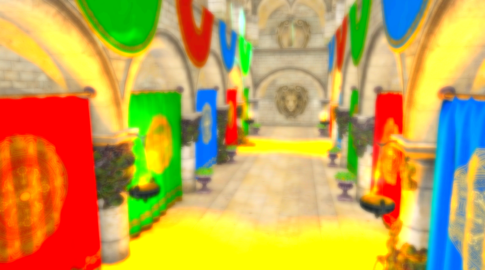Below: Tone mapping applied to the scene to create a more gloomy atmosphere.
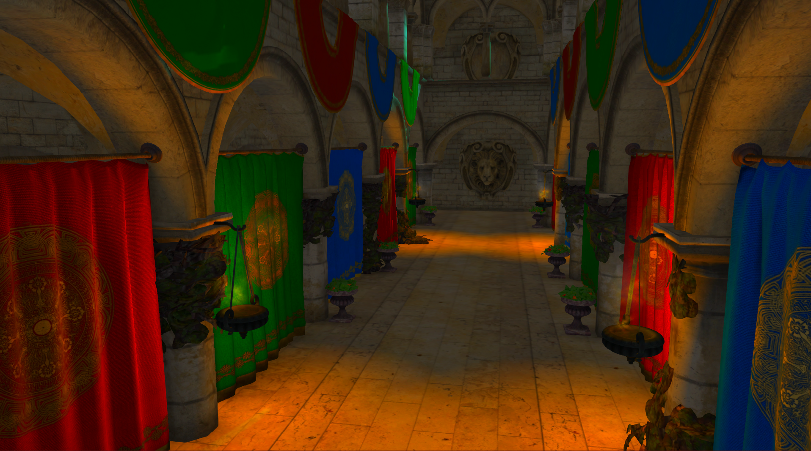Below: A spot light is illuminating the scene.

Below: A sun flare can be seen shining down on the scene.

Below: Water in a scene.
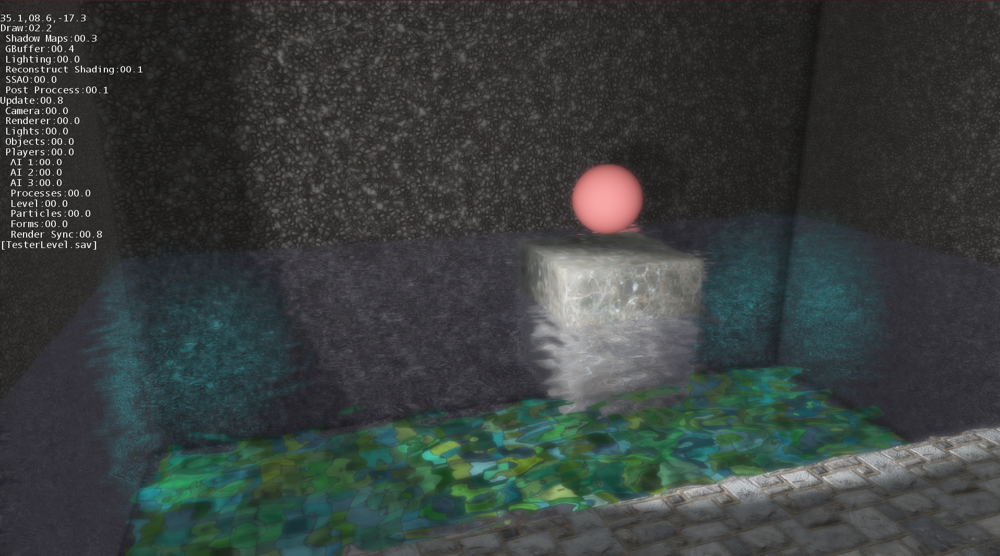Below: Natural sunlight beating down on the scene.
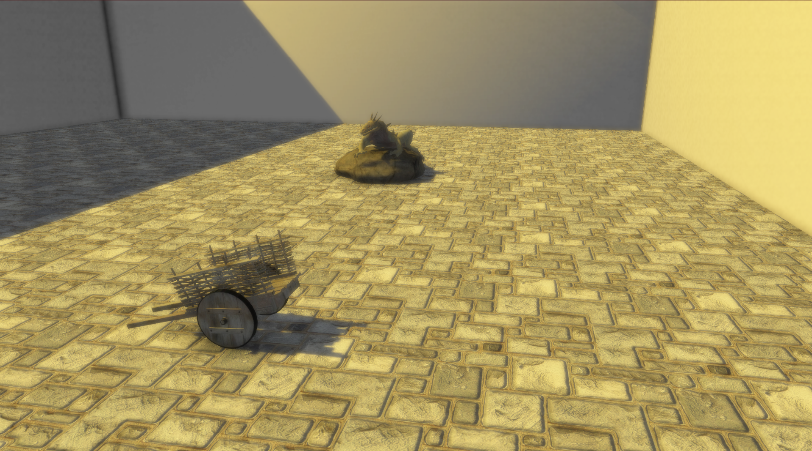Below: Fire particle system in a scene.

Below: Transparent object materials are fully supported.
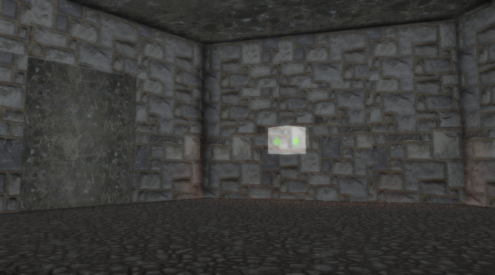Below: Thousands of lights are supported at once.
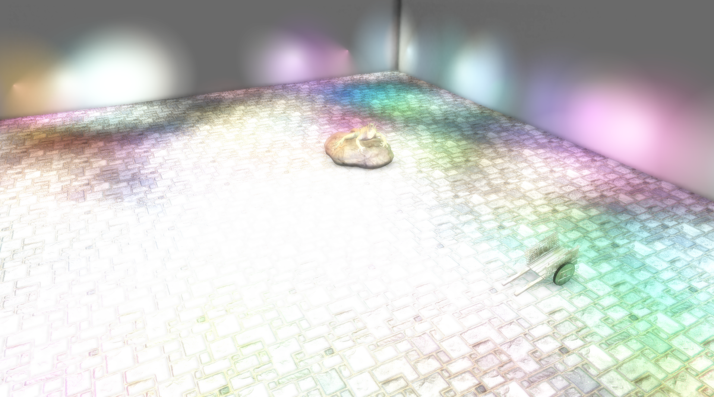Below: Dynamic show casting at work
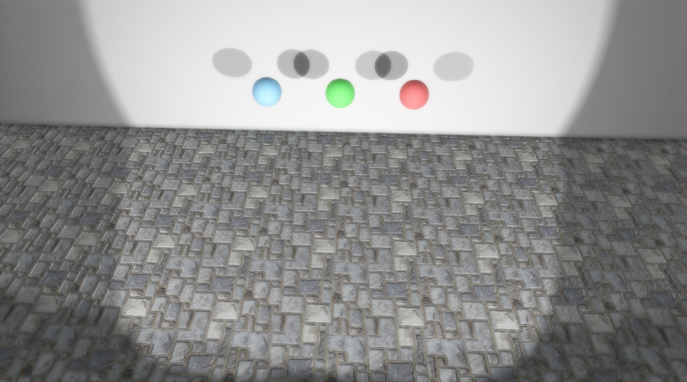Below: Further demonstration of a shadows for a complex object.
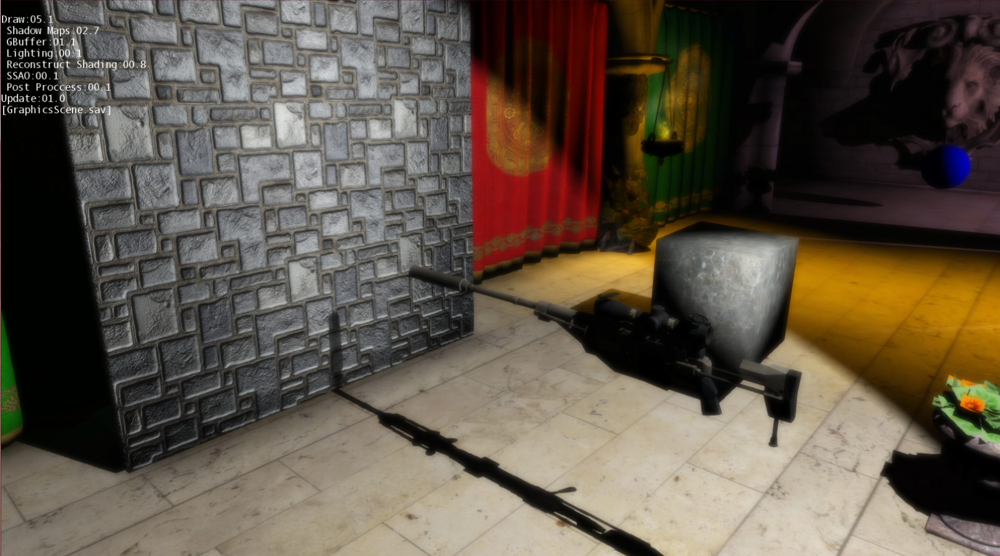Below: Spot light illuminating a part of a scene.
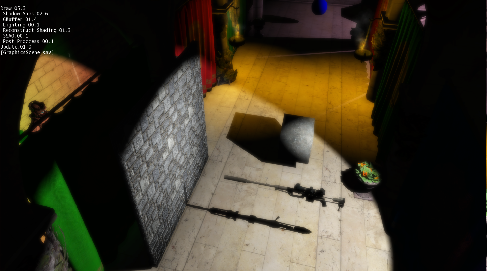Below: Even in a dark lighting environment the scene looks great.
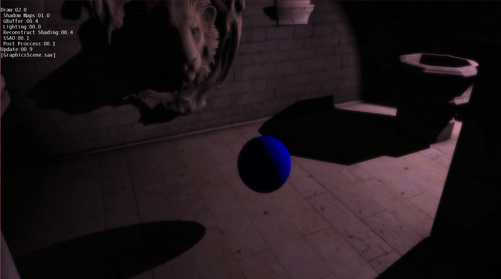Below: Import your own custom game models.
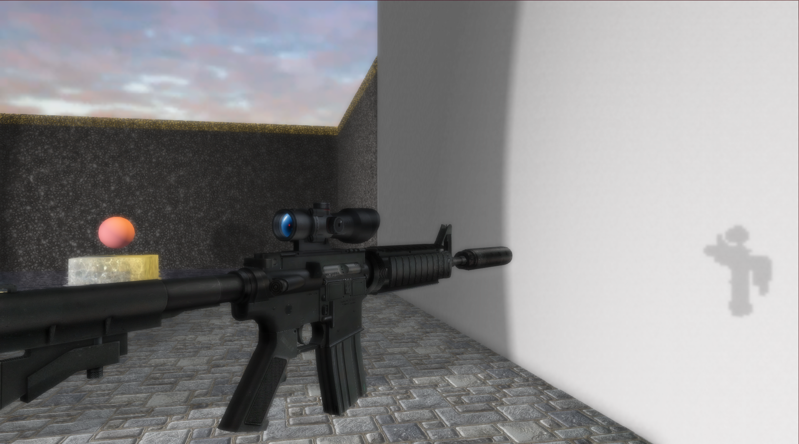Physics
The Wumpus Game Engine comes fully equipped with a full fledged physics system. Collisions, constraints, and movement are all a reality using this physics system.
Blocks resting on top of each other

Customization
Customizing the Wumpus Game Engine is simple. Due to the flexible framework the engine could easily be used to make any sort of game, not just Hunt the Wumpus. No programming is even required to edit scenes. The in game map editor allows you to place objects, lights, particle systems, or anything that might be in a scene. Make the game feel like yours by changing the render settings and make the game look the way you want it. The customization possibilities are endless.
Complete list of editor features:
-
Particle system editor form
- Create from existing set of particle systems
-
Any particle system is possible through changing the following editable properties of particle systems in the map editor
- Particle image texture file name
- Maximum number of particles
- Particle life duration
- Particle life duration variance
- Emit particle variance
- Emit particle min and max horizontal and vertical velocity
- Particle end speed
- Min and max particle rotate speed
- Min and max starting and ending size
- Particle emit rate
- Particle gravity
- Particle system position
- Starting color particle hue
- Ending color particle hue
- Blending technique of particles
-
Object management editor form
- View all the objects in the scene by their unique ID
- Delete add objects from dynamic list of all objects in the scene
- Translate, rotate, or scale objects along any of the three axes either individually or by a group
- Clone objects to allow for fast simple object placement
- Modify any of the materials of the object via the material editor form
-
Animated object editor form
- Define what animation clips to use in the form editor
- However, in depth animation functionality must be accessed through programming with the Wumpus Game Engine.
-
Material editor form
- Change diffuse, normal, specular map
- Change opacity
- Modify Texture translation, rotation, and scale
- Define rgba diffuse materials and rgb specular materials for use
- Can copy and past materials for quick and easy material applying
-
Physics editor form
- Change object's mass
- Load physics data from external file containing bounding box information
- Add joints between objects
- Add constraints
- Edit object's inertia
- Change gravity for the system
-
Events editor form
- Timed events
-
Triggered events
- Timed
- Trigger volumes
- Trigger sound effects
- Toggle object states (like a flashing light or an opening and closing door)
-
Light editor form
- View all lights in the scene by ID
- Add or delete lights from selecting from the dynamic list of all the lights in the scene.
-
Settings for all lights that can be changed
- Diffuse light
- Specular light
- Color
- Diffuse intensity
- Specular intensity
-
Settings just for point lights that can be changed
- Light radius
- Position light
-
Settings just for spot lights that can be changed
- Range of spot light
- Spot light cone angle
- Spot exponent
- Whether the light casts shadows
- The depth bias used in the shadow mapping algorithm
- Whether a lens flare should be enabled for the light
- Lens flare screen query and glow size (controls how the lens flare looks)
- Light rotation
- Light position
-
Settings just for directional lights that can be changed
- Light rotation
- Whether shadows should be used
- The depth bias used in the shadow mapping algorithm
- Whether a lens flare should be used for this light source
- The flare query and glow size
-
Post processing effect editor form
- System is very extensible and easy to work with allowing for programming new post processing effects
- Create post processing effects
- Change the order of post processing effects
- Change anti aliasing settings
-
Artificial intelligence editor form
- Edit sparse graphs for AI path navigation
- Create sparse graphs either manually or automatically generate them
- View the AI path navigation system in real time in the scene
-
Scene settings editor form
- Change shadow map render quality
- Change the sky map
- Modify ambient light source
- Change ambient occlusion settings
- Save and load map files
Below: A fully customized scene

Below: Debug settings of a scene with light position and type being displayed in the 3D environment.
Below: Debug settings showing the render culling bounding boxes for meshes and lights.
Game Play
The Wumpus Game Engine comes with the core Hunt the Wumpus game play functionality. However, it is very easy to extend this or simply start from scratch. The Hunt the Wumpus specific code is completely abstracted from the rest of the game engine. For the game overlaying UI an existing framework exists to easily render custom UIs. Furthermore, there is already UI functionality in the Wumpus Game Engine that can be extended upon.
Below: An intractable flare object in a scene.
Below: The first person view with the overlaying UI in the Hunt the Wumpus game.
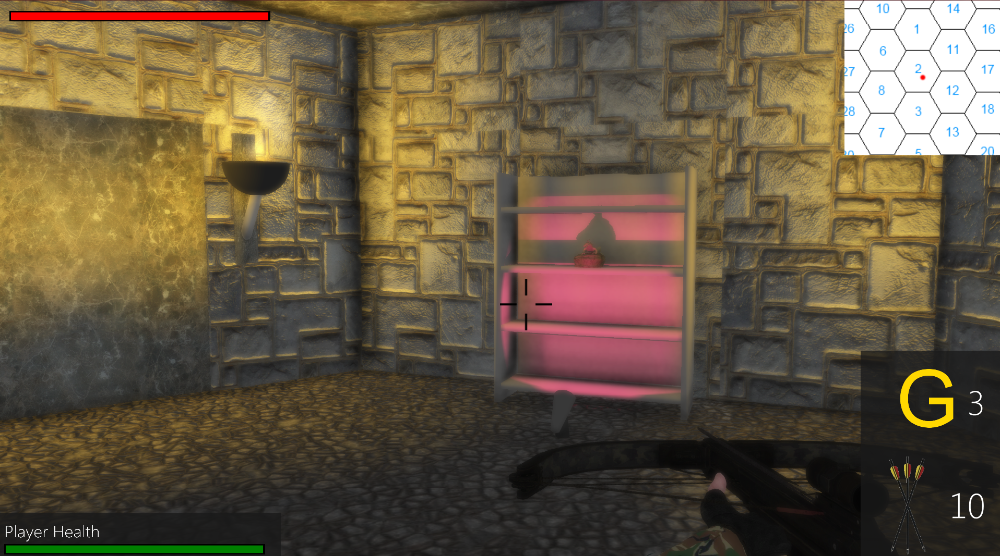- Date: Early 2013 to Late 2014
- Service: Graphics Programming
.jpg)
.jpg)
.jpg )
.jpg)